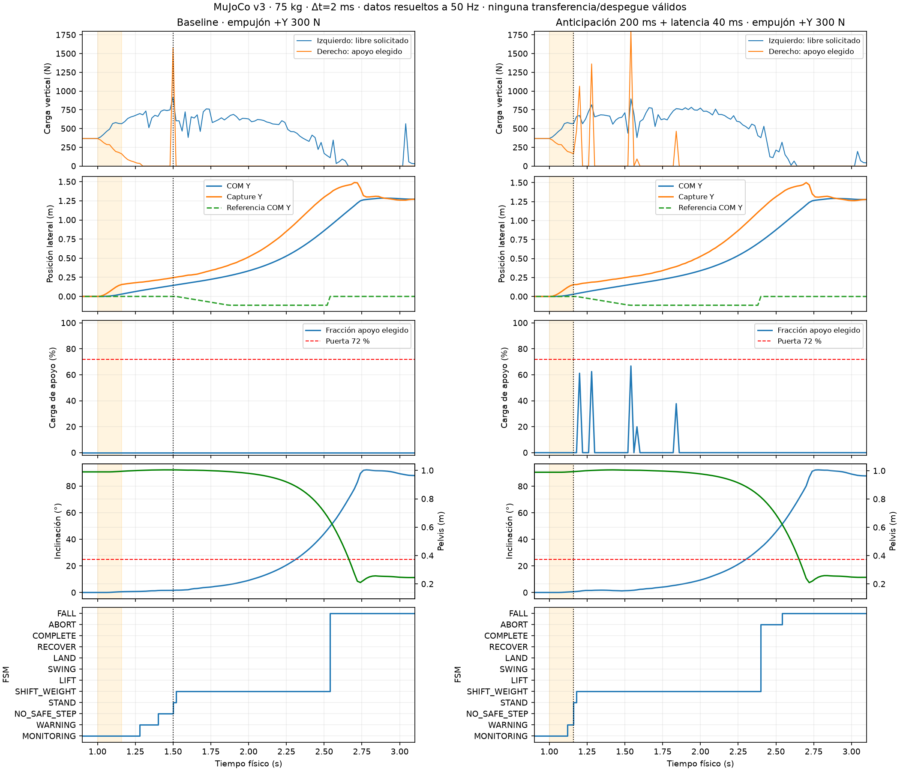

11 de noviembre de 2026 · Base 90727886d51e117fc0ca47716878ac0ecbee376d · Issue #70.
Resultado negativo: 0 recuperaciones físicas completas en 108 ensayos (9 campañas de 12 casos). Cada campaña conserva 8 casos estables sin solicitud de paso y 4 caídas. No se alcanzó el nivel 1, ni los hitos A, B o C. Una suela elevada durante la caída no se contabiliza como vuelo.
El planificador ya penaliza levantar el pie más cargado. El fallo lateral no se explica por ignorar ese dato: exige apoyo bilateral instantáneo y un destino alcanzable sin cruce; no predice si el apoyo elegido conservará carga durante la transferencia. En +Y, la geometría favorece mover el pie izquierdo hacia fuera y usar el derecho, aunque el derecho esté perdiendo carga.
Baseline +Y 300 N: primera advertencia en 1,28 s (izquierdo 700,05 N, derecho 35,49 N). El derecho queda en 0 N en 1,30 s. El planificador emite NO_SAFE_STEP desde 1,40 s y acepta una solicitud en 1,50 s durante un pico transitorio: derecho 1580,13 N, izquierdo 919,79 N. En 1,52 y 1,54 s, el apoyo elegido vuelve a 0 N; en 1,54 s el pie que se pretendía levantar soporta 603,41 N. La FSM bloquea correctamente el despegue.
Con anticipación de 200 ms y latencia de 40 ms, la solicitud llega en 1,16 s, con derecho 162,89 N e izquierdo 565,10 N (22,4 % en el futuro apoyo). El COM aún avanza lateralmente a 0,388 m/s. Adelantar la solicitud 340 ms no obtiene carga unilateral sostenida. La referencia del COM se dirige al lado correcto (Y negativo para apoyo derecho), pero el COM continúa hacia Y positivo. Las saturaciones de tobillo de 160 N·m aparecen también en el pie descargado.
Hipótesis pendientes: el reparto bilateral de momentos y la rigidez/amortiguación del tobillo descargado pueden contribuir a la pérdida de contacto. Reducir solo la amortiguación activa a 0,1 tampoco produce transferencia. Estos datos no demuestran que los 300 N sean físicamente irrecuperables, ni que falte fuerza muscular: hace falta un análisis de viabilidad dinámica de contacto.
Se añadieron opciones exclusivamente experimentales de latencia, pronóstico lineal de COM, rampa lateral, postura bilateral de cadera y amortiguación de tobillo; todas mantienen los valores anteriores por defecto. La latencia de decisión se separó del horizonte predictivo. Se conserva la configuración al reiniciar. Se añadió telemetría de referencia, pares limitados y fuerzas sobre la raíz, un benchmark reproducible, pruebas de determinismo y un grabador frontal/lateral.
Archivos: src/control/reactiveStepCoordinator.ts, recoveryPlanner.ts, experimentalStep.ts, src/physics/mujoco.ts, pruebas unitarias y tests/manual/loadAwareRecoveryBench.test.ts, scripts de captura/informe. En src/main.ts se corrige además el refresco del editor de fuerzas tras preparar v3: los campos quedaban deshabilitados después del cambio de modelo.
No cambian XML, masas, fricción nominal, colisiones, timestep, límites de par ni umbrales de aceptación. Permanecen 72/28 %, total >250 N, velocidad <1,2 m/s, pelvis >0,82 m, inclinación <25° y 80 ms continuos; también se conserva la espera mínima de 250 ms en SHIFT_WEIGHT. El criterio adicional de COM sobre el pie elegido se comprueba independientemente: la puerta actual usa el polígono conjunto cargado.
Pulso de medio seno entre 1,00 y 1,16 s en esternón; 6 s físicos por ensayo; 75 kg, Δt=0,002 s. Variante comparada: anticipación 200 ms + latencia 40 ms. NO_STEP indica equilibrio sin solicitar paso; no equivale a COMPLETE. Los impulsos se integraron sobre la fuerza efectivamente aplicada a 500 Hz.
| Caso | Impulso N·s | Baseline | Solicitud baseline s | Variante | Solicitud variante s | Transferencia válida s | LIFT |
|---|---|---|---|---|---|---|---|
| forward-120 | 12.222 | NO_STEP | — | NO_STEP | — | 0.000 | — |
| forward-160 | 16.295 | NO_STEP | — | NO_STEP | — | 0.000 | — |
| forward-200 | 20.369 | FALL | 2.320 | FALL | 2.140 | 0.000 | — |
| backward-100 | 10.185 | NO_STEP | — | NO_STEP | — | 0.000 | — |
| backward-130 | 13.240 | NO_STEP | — | NO_STEP | — | 0.000 | — |
| backward-160 | 16.295 | FALL | 1.480 | FALL | 1.160 | 0.000 | — |
| left-160 | 16.295 | NO_STEP | — | NO_STEP | — | 0.000 | — |
| left-220 | 22.406 | NO_STEP | — | NO_STEP | — | 0.000 | — |
| left-300 | 30.554 | FALL | 1.500 | FALL | 1.160 | 0.000 | — |
| right-160 | 16.295 | NO_STEP | — | NO_STEP | — | 0.000 | — |
| right-220 | 22.406 | NO_STEP | — | NO_STEP | — | 0.000 | — |
| right-300 | 30.554 | FALL | 1.500 | FALL | 1.160 | 0.000 | — |
Árbol A/B: latencia 40 ms frente a baseline; anticipación 200 ms frente a baseline; después latencia 40 ms frente a anticipación 200 ms; rampa 80 ms frente a esa combinación; cadera +0,12 rad frente a la combinación; +0,24 rad frente a +0,12; −0,12 rad frente a +0,12; amortiguación 0,1 frente a la combinación sin cadera. Se varía un parámetro por comparación. No se repite la hipótesis de hombros.
| variant | case | requestS | supportAtRequestN | swingAtRequestN | shiftDurationS | maxLoadFractionInShift | fsmDwellS | strictTransferS | liftS | swingS | finalSpeedMps | minPelvisM | maxTiltDeg | outcome |
|---|---|---|---|---|---|---|---|---|---|---|---|---|---|---|
| baseline | forward-120 | — | — | — | — | 0.000 | 0.000 | 0.000 | — | — | 0.000 | 0.990 | 2.512 | NO_STEP |
| baseline | forward-160 | — | — | — | — | 0.000 | 0.000 | 0.000 | — | — | 0.000 | 0.989 | 3.921 | NO_STEP |
| baseline | forward-200 | 2.320 | 408.411 | 408.411 | 0.940 | 1.000 | 0.000 | 0.000 | — | — | 0.007 | 0.126 | 91.827 | FALL |
| baseline | backward-100 | — | — | — | — | 0.000 | 0.000 | 0.000 | — | — | 0.000 | 0.988 | 5.158 | NO_STEP |
| baseline | backward-130 | — | — | — | — | 0.000 | 0.000 | 0.000 | — | — | 0.000 | 0.988 | 6.907 | NO_STEP |
| baseline | backward-160 | 1.480 | 371.204 | 371.204 | 1.220 | 1.000 | 0.000 | 0.000 | — | — | 0.009 | 0.130 | 90.182 | FALL |
| baseline | left-160 | — | — | — | — | 0.000 | 0.000 | 0.000 | — | — | 0.000 | 0.990 | 0.718 | NO_STEP |
| baseline | left-220 | — | — | — | — | 0.000 | 0.000 | 0.000 | — | — | 0.000 | 0.989 | 0.919 | NO_STEP |
| baseline | left-300 | 1.500 | 1580.130 | 919.789 | 1.020 | 0.000 | 0.000 | 0.000 | — | — | 0.017 | 0.140 | 92.134 | FALL |
| baseline | right-160 | — | — | — | — | 0.000 | 0.000 | 0.000 | — | — | 0.000 | 0.990 | 0.718 | NO_STEP |
| baseline | right-220 | — | — | — | — | 0.000 | 0.000 | 0.000 | — | — | 0.000 | 0.989 | 0.919 | NO_STEP |
| baseline | right-300 | 1.500 | 1580.401 | 919.787 | 1.020 | 0.000 | 0.000 | 0.000 | — | — | 0.296 | 0.139 | 92.358 | FALL |
| latency-40ms | forward-120 | — | — | — | — | 0.000 | 0.000 | 0.000 | — | — | 0.000 | 0.990 | 2.512 | NO_STEP |
| latency-40ms | forward-160 | — | — | — | — | 0.000 | 0.000 | 0.000 | — | — | 0.000 | 0.989 | 3.921 | NO_STEP |
| latency-40ms | forward-200 | 2.240 | 367.956 | 367.956 | 1.020 | 1.000 | 0.000 | 0.000 | — | — | 0.009 | 0.126 | 92.124 | FALL |
| latency-40ms | backward-100 | — | — | — | — | 0.000 | 0.000 | 0.000 | — | — | 0.000 | 0.988 | 5.158 | NO_STEP |
| latency-40ms | backward-130 | — | — | — | — | 0.000 | 0.000 | 0.000 | — | — | 0.000 | 0.988 | 6.907 | NO_STEP |
| latency-40ms | backward-160 | 1.400 | 370.394 | 370.394 | 1.220 | 1.000 | 0.000 | 0.000 | — | — | 0.009 | 0.127 | 89.939 | FALL |
| latency-40ms | left-160 | — | — | — | — | 0.000 | 0.000 | 0.000 | — | — | 0.000 | 0.990 | 0.718 | NO_STEP |
| latency-40ms | left-220 | — | — | — | — | 0.000 | 0.000 | 0.000 | — | — | 0.000 | 0.989 | 0.919 | NO_STEP |
| latency-40ms | left-300 | 1.500 | 1580.130 | 919.789 | 1.020 | 0.000 | 0.000 | 0.000 | — | — | 0.017 | 0.140 | 92.134 | FALL |
| latency-40ms | right-160 | — | — | — | — | 0.000 | 0.000 | 0.000 | — | — | 0.000 | 0.990 | 0.718 | NO_STEP |
| latency-40ms | right-220 | — | — | — | — | 0.000 | 0.000 | 0.000 | — | — | 0.000 | 0.989 | 0.919 | NO_STEP |
| latency-40ms | right-300 | 1.500 | 1580.401 | 919.787 | 1.020 | 0.000 | 0.000 | 0.000 | — | — | 0.296 | 0.139 | 92.358 | FALL |
| lookahead-200ms | forward-120 | — | — | — | — | 0.000 | 0.000 | 0.000 | — | — | 0.000 | 0.990 | 2.512 | NO_STEP |
| lookahead-200ms | forward-160 | — | — | — | — | 0.000 | 0.000 | 0.000 | — | — | 0.000 | 0.989 | 3.921 | NO_STEP |
| lookahead-200ms | forward-200 | 2.220 | 368.206 | 368.206 | 1.040 | 1.000 | 0.000 | 0.000 | — | — | 0.009 | 0.124 | 92.484 | FALL |
| lookahead-200ms | backward-100 | — | — | — | — | 0.000 | 0.000 | 0.000 | — | — | 0.000 | 0.988 | 5.158 | NO_STEP |
| lookahead-200ms | backward-130 | — | — | — | — | 0.000 | 0.000 | 0.000 | — | — | 0.000 | 0.988 | 6.907 | NO_STEP |
| lookahead-200ms | backward-160 | 1.240 | 367.216 | 367.216 | 1.220 | 1.000 | 0.000 | 0.000 | — | — | 0.003 | 0.125 | 90.652 | FALL |
| lookahead-200ms | left-160 | — | — | — | — | 0.000 | 0.000 | 0.000 | — | — | 0.000 | 0.990 | 0.718 | NO_STEP |
| lookahead-200ms | left-220 | — | — | — | — | 0.000 | 0.000 | 0.000 | — | — | 0.000 | 0.989 | 0.919 | NO_STEP |
| lookahead-200ms | left-300 | 1.240 | 56.976 | 666.827 | 1.220 | 0.397 | 0.000 | 0.000 | — | — | 0.075 | 0.140 | 92.364 | FALL |
| lookahead-200ms | right-160 | — | — | — | — | 0.000 | 0.000 | 0.000 | — | — | 0.000 | 0.990 | 0.718 | NO_STEP |
| lookahead-200ms | right-220 | — | — | — | — | 0.000 | 0.000 | 0.000 | — | — | 0.000 | 0.989 | 0.919 | NO_STEP |
| lookahead-200ms | right-300 | 1.240 | 56.976 | 666.827 | 1.220 | 0.000 | 0.000 | 0.000 | — | — | 0.014 | 0.139 | 92.151 | FALL |
| forecast200-latency40 | forward-120 | — | — | — | — | 0.000 | 0.000 | 0.000 | — | — | 0.000 | 0.990 | 2.512 | NO_STEP |
| forecast200-latency40 | forward-160 | — | — | — | — | 0.000 | 0.000 | 0.000 | — | — | 0.000 | 0.989 | 3.921 | NO_STEP |
| forecast200-latency40 | forward-200 | 2.140 | 368.720 | 368.720 | 1.220 | 1.000 | 0.000 | 0.000 | — | — | 0.018 | 0.126 | 91.389 | FALL |
| forecast200-latency40 | backward-100 | — | — | — | — | 0.000 | 0.000 | 0.000 | — | — | 0.000 | 0.988 | 5.158 | NO_STEP |
| forecast200-latency40 | backward-130 | — | — | — | — | 0.000 | 0.000 | 0.000 | — | — | 0.000 | 0.988 | 6.907 | NO_STEP |
| forecast200-latency40 | backward-160 | 1.160 | 375.801 | 375.801 | 1.220 | 1.000 | 0.000 | 0.000 | — | — | 0.017 | 0.125 | 90.737 | FALL |
| forecast200-latency40 | left-160 | — | — | — | — | 0.000 | 0.000 | 0.000 | — | — | 0.000 | 0.990 | 0.718 | NO_STEP |
| forecast200-latency40 | left-220 | — | — | — | — | 0.000 | 0.000 | 0.000 | — | — | 0.000 | 0.989 | 0.919 | NO_STEP |
| forecast200-latency40 | left-300 | 1.160 | 162.889 | 565.096 | 1.220 | 0.668 | 0.000 | 0.000 | — | — | 0.043 | 0.139 | 92.381 | FALL |
| forecast200-latency40 | right-160 | — | — | — | — | 0.000 | 0.000 | 0.000 | — | — | 0.000 | 0.990 | 0.718 | NO_STEP |
| forecast200-latency40 | right-220 | — | — | — | — | 0.000 | 0.000 | 0.000 | — | — | 0.000 | 0.989 | 0.919 | NO_STEP |
| forecast200-latency40 | right-300 | 1.160 | 162.889 | 565.096 | 1.220 | 0.668 | 0.000 | 0.000 | — | — | 0.051 | 0.139 | 92.381 | FALL |
| forecast200-latency40-ramp80 | forward-120 | — | — | — | — | 0.000 | 0.000 | 0.000 | — | — | 0.000 | 0.990 | 2.512 | NO_STEP |
| forecast200-latency40-ramp80 | forward-160 | — | — | — | — | 0.000 | 0.000 | 0.000 | — | — | 0.000 | 0.989 | 3.921 | NO_STEP |
| forecast200-latency40-ramp80 | forward-200 | 2.140 | 368.720 | 368.720 | 1.220 | 1.000 | 0.000 | 0.000 | — | — | 0.076 | 0.126 | 92.348 | FALL |
| forecast200-latency40-ramp80 | backward-100 | — | — | — | — | 0.000 | 0.000 | 0.000 | — | — | 0.000 | 0.988 | 5.158 | NO_STEP |
| forecast200-latency40-ramp80 | backward-130 | — | — | — | — | 0.000 | 0.000 | 0.000 | — | — | 0.000 | 0.988 | 6.907 | NO_STEP |
| forecast200-latency40-ramp80 | backward-160 | 1.160 | 375.801 | 375.801 | 1.220 | 1.000 | 0.000 | 0.000 | — | — | 0.019 | 0.137 | 92.816 | FALL |
| forecast200-latency40-ramp80 | left-160 | — | — | — | — | 0.000 | 0.000 | 0.000 | — | — | 0.000 | 0.990 | 0.718 | NO_STEP |
| forecast200-latency40-ramp80 | left-220 | — | — | — | — | 0.000 | 0.000 | 0.000 | — | — | 0.000 | 0.989 | 0.919 | NO_STEP |
| forecast200-latency40-ramp80 | left-300 | 1.160 | 162.889 | 565.096 | 1.220 | 0.609 | 0.000 | 0.000 | — | — | 0.036 | 0.139 | 92.201 | FALL |
| forecast200-latency40-ramp80 | right-160 | — | — | — | — | 0.000 | 0.000 | 0.000 | — | — | 0.000 | 0.990 | 0.718 | NO_STEP |
| forecast200-latency40-ramp80 | right-220 | — | — | — | — | 0.000 | 0.000 | 0.000 | — | — | 0.000 | 0.989 | 0.919 | NO_STEP |
| forecast200-latency40-ramp80 | right-300 | 1.160 | 162.889 | 565.096 | 1.220 | 0.609 | 0.000 | 0.000 | — | — | 0.036 | 0.139 | 92.201 | FALL |
| forecast200-latency40-hip012 | forward-120 | — | — | — | — | 0.000 | 0.000 | 0.000 | — | — | 0.000 | 0.990 | 2.512 | NO_STEP |
| forecast200-latency40-hip012 | forward-160 | — | — | — | — | 0.000 | 0.000 | 0.000 | — | — | 0.000 | 0.989 | 3.921 | NO_STEP |
| forecast200-latency40-hip012 | forward-200 | 2.140 | 368.720 | 368.720 | 1.180 | 1.000 | 0.000 | 0.000 | — | — | 0.072 | 0.129 | 91.847 | FALL |
| forecast200-latency40-hip012 | backward-100 | — | — | — | — | 0.000 | 0.000 | 0.000 | — | — | 0.000 | 0.988 | 5.158 | NO_STEP |
| forecast200-latency40-hip012 | backward-130 | — | — | — | — | 0.000 | 0.000 | 0.000 | — | — | 0.000 | 0.988 | 6.907 | NO_STEP |
| forecast200-latency40-hip012 | backward-160 | 1.160 | 375.801 | 375.801 | 1.220 | 0.704 | 0.000 | 0.000 | — | — | 0.000 | 0.140 | 89.859 | FALL |
| forecast200-latency40-hip012 | left-160 | — | — | — | — | 0.000 | 0.000 | 0.000 | — | — | 0.000 | 0.990 | 0.718 | NO_STEP |
| forecast200-latency40-hip012 | left-220 | — | — | — | — | 0.000 | 0.000 | 0.000 | — | — | 0.000 | 0.989 | 0.919 | NO_STEP |
| forecast200-latency40-hip012 | left-300 | 1.160 | 162.889 | 565.096 | 1.220 | 0.609 | 0.000 | 0.000 | — | — | 0.021 | 0.140 | 92.403 | FALL |
| forecast200-latency40-hip012 | right-160 | — | — | — | — | 0.000 | 0.000 | 0.000 | — | — | 0.000 | 0.990 | 0.718 | NO_STEP |
| forecast200-latency40-hip012 | right-220 | — | — | — | — | 0.000 | 0.000 | 0.000 | — | — | 0.000 | 0.989 | 0.919 | NO_STEP |
| forecast200-latency40-hip012 | right-300 | 1.160 | 162.889 | 565.096 | 1.220 | 0.609 | 0.000 | 0.000 | — | — | 0.021 | 0.140 | 92.547 | FALL |
| forecast200-latency40-hip024 | forward-120 | — | — | — | — | 0.000 | 0.000 | 0.000 | — | — | 0.000 | 0.990 | 2.512 | NO_STEP |
| forecast200-latency40-hip024 | forward-160 | — | — | — | — | 0.000 | 0.000 | 0.000 | — | — | 0.000 | 0.989 | 3.921 | NO_STEP |
| forecast200-latency40-hip024 | forward-200 | 2.140 | 368.720 | 368.720 | 1.220 | 1.000 | 0.000 | 0.000 | — | — | 0.024 | 0.138 | 89.954 | FALL |
| forecast200-latency40-hip024 | backward-100 | — | — | — | — | 0.000 | 0.000 | 0.000 | — | — | 0.000 | 0.988 | 5.158 | NO_STEP |
| forecast200-latency40-hip024 | backward-130 | — | — | — | — | 0.000 | 0.000 | 0.000 | — | — | 0.000 | 0.988 | 6.907 | NO_STEP |
| forecast200-latency40-hip024 | backward-160 | 1.160 | 375.801 | 375.801 | 1.220 | 1.000 | 0.000 | 0.000 | — | — | 0.021 | 0.137 | 93.694 | FALL |
| forecast200-latency40-hip024 | left-160 | — | — | — | — | 0.000 | 0.000 | 0.000 | — | — | 0.000 | 0.990 | 0.718 | NO_STEP |
| forecast200-latency40-hip024 | left-220 | — | — | — | — | 0.000 | 0.000 | 0.000 | — | — | 0.000 | 0.989 | 0.919 | NO_STEP |
| forecast200-latency40-hip024 | left-300 | 1.160 | 162.889 | 565.096 | 1.220 | 0.000 | 0.000 | 0.000 | — | — | 0.025 | 0.138 | 92.497 | FALL |
| forecast200-latency40-hip024 | right-160 | — | — | — | — | 0.000 | 0.000 | 0.000 | — | — | 0.000 | 0.990 | 0.718 | NO_STEP |
| forecast200-latency40-hip024 | right-220 | — | — | — | — | 0.000 | 0.000 | 0.000 | — | — | 0.000 | 0.989 | 0.919 | NO_STEP |
| forecast200-latency40-hip024 | right-300 | 1.160 | 162.889 | 565.096 | 1.220 | 0.000 | 0.000 | 0.000 | — | — | 0.020 | 0.139 | 92.704 | FALL |
| forecast200-latency40-hipMinus012 | forward-120 | — | — | — | — | 0.000 | 0.000 | 0.000 | — | — | 0.000 | 0.990 | 2.512 | NO_STEP |
| forecast200-latency40-hipMinus012 | forward-160 | — | — | — | — | 0.000 | 0.000 | 0.000 | — | — | 0.000 | 0.989 | 3.921 | NO_STEP |
| forecast200-latency40-hipMinus012 | forward-200 | 2.140 | 368.720 | 368.720 | 1.220 | 1.000 | 0.000 | 0.000 | — | — | 0.041 | 0.127 | 91.623 | FALL |
| forecast200-latency40-hipMinus012 | backward-100 | — | — | — | — | 0.000 | 0.000 | 0.000 | — | — | 0.000 | 0.988 | 5.158 | NO_STEP |
| forecast200-latency40-hipMinus012 | backward-130 | — | — | — | — | 0.000 | 0.000 | 0.000 | — | — | 0.000 | 0.988 | 6.907 | NO_STEP |
| forecast200-latency40-hipMinus012 | backward-160 | 1.160 | 375.801 | 375.801 | 1.220 | 1.000 | 0.000 | 0.000 | — | — | 0.025 | 0.129 | 90.660 | FALL |
| forecast200-latency40-hipMinus012 | left-160 | — | — | — | — | 0.000 | 0.000 | 0.000 | — | — | 0.000 | 0.990 | 0.718 | NO_STEP |
| forecast200-latency40-hipMinus012 | left-220 | — | — | — | — | 0.000 | 0.000 | 0.000 | — | — | 0.000 | 0.989 | 0.919 | NO_STEP |
| forecast200-latency40-hipMinus012 | left-300 | 1.160 | 162.889 | 565.096 | 1.220 | 0.616 | 0.000 | 0.000 | — | — | 0.238 | 0.139 | 92.399 | FALL |
| forecast200-latency40-hipMinus012 | right-160 | — | — | — | — | 0.000 | 0.000 | 0.000 | — | — | 0.000 | 0.990 | 0.718 | NO_STEP |
| forecast200-latency40-hipMinus012 | right-220 | — | — | — | — | 0.000 | 0.000 | 0.000 | — | — | 0.000 | 0.989 | 0.919 | NO_STEP |
| forecast200-latency40-hipMinus012 | right-300 | 1.160 | 162.889 | 565.096 | 1.220 | 0.616 | 0.000 | 0.000 | — | — | 0.231 | 0.139 | 92.399 | FALL |
| forecast200-latency40-ankleDamping01 | forward-120 | — | — | — | — | 0.000 | 0.000 | 0.000 | — | — | 0.000 | 0.990 | 2.512 | NO_STEP |
| forecast200-latency40-ankleDamping01 | forward-160 | — | — | — | — | 0.000 | 0.000 | 0.000 | — | — | 0.000 | 0.989 | 3.921 | NO_STEP |
| forecast200-latency40-ankleDamping01 | forward-200 | 2.140 | 368.720 | 368.720 | 1.180 | 0.680 | 0.000 | 0.000 | — | — | 0.040 | 0.122 | 92.289 | FALL |
| forecast200-latency40-ankleDamping01 | backward-100 | — | — | — | — | 0.000 | 0.000 | 0.000 | — | — | 0.000 | 0.988 | 5.158 | NO_STEP |
| forecast200-latency40-ankleDamping01 | backward-130 | — | — | — | — | 0.000 | 0.000 | 0.000 | — | — | 0.000 | 0.988 | 6.907 | NO_STEP |
| forecast200-latency40-ankleDamping01 | backward-160 | 1.160 | 375.801 | 375.801 | 1.220 | 1.000 | 0.000 | 0.000 | — | — | 0.024 | 0.127 | 90.157 | FALL |
| forecast200-latency40-ankleDamping01 | left-160 | — | — | — | — | 0.000 | 0.000 | 0.000 | — | — | 0.000 | 0.990 | 0.718 | NO_STEP |
| forecast200-latency40-ankleDamping01 | left-220 | — | — | — | — | 0.000 | 0.000 | 0.000 | — | — | 0.000 | 0.989 | 0.919 | NO_STEP |
| forecast200-latency40-ankleDamping01 | left-300 | 1.160 | 162.889 | 565.096 | 1.220 | 0.128 | 0.000 | 0.000 | — | — | 0.161 | 0.138 | 92.055 | FALL |
| forecast200-latency40-ankleDamping01 | right-160 | — | — | — | — | 0.000 | 0.000 | 0.000 | — | — | 0.000 | 0.990 | 0.718 | NO_STEP |
| forecast200-latency40-ankleDamping01 | right-220 | — | — | — | — | 0.000 | 0.000 | 0.000 | — | — | 0.000 | 0.989 | 0.919 | NO_STEP |
| forecast200-latency40-ankleDamping01 | right-300 | 1.160 | 162.889 | 565.096 | 1.220 | 0.128 | 0.000 | 0.000 | — | — | 0.194 | 0.138 | 92.055 | FALL |

Las trazas completas y sus qpos están en physics/<campaña>/<caso>.json; contienen la evolución a 0/20/40/80/120 ms desde la solicitud, fuerzas normales, COM/velocidad/captura, rodillas reales, pares y puertas de la FSM. CSV de todas las métricas · JSON agregado · Gráfica exportable.
Se verificaron 32400 muestras con fuerzas generalizadas de raíz y wrench externo de pelvis exactamente nulos. Los invariantes del controlador también comprueban la raíz en cada paso de integración. Los contactos leídos tienen el retardo de ≤2 ms del integrador existente. La deriva de marcadores de suela se registra como proxy conservador de desplazamiento; no se presenta como medición exacta del deslizamiento material. Sin aterrizaje, la deriva de aterrizaje es N/A. No existe un aterrizaje válido en esta batería.
También se grabaron ambas vistas de frontal 200 N (FALL) y frontal 120 N (sin paso). Las grabaciones ejecutan MuJoCo de nuevo a timestep fijo: no reproducen pies animados ni modifican qpos. Los gráficos en vídeo recortan la escala de presentación; los JSON y PNG conservan los valores medidos.
Nivel 1: 0 intervalos válidos de 80 ms; máximo de muestras listas consecutivas: 0. Nivel 2: ningún LIFT/SWING legítimo. Niveles 3/4: ningún aterrizaje ni COMPLETE. A no alcanzado, por lo que no hay éxito que repetir tres veces. B pendiente: no se han seleccionado fuerzas exitosas ni ejecutado sus perturbaciones ±10 %. C pendiente: no se define un porcentaje de robustez ni se reclasifican retrospectivamente caídas como irrecuperables.
Las 12 trayectorias por defecto coinciden exactamente con el baseline previo a estos cambios en todas las qpos muestreadas a 50 Hz. La prueba de reset repite también la trayectoria experimental completa de forma determinista. La repetibilidad de una caída no acredita recuperación.
{
"toolingWorkaround": "Vite/Vitest --configLoader runner; development dependency optimizer disabled locally because esbuild cannot traverse user directory",
"platform": "Windows; Node 23.7.0; MuJoCo WASM 3.17.0",
"npm_ci": "passed in Programs with cache in Programs",
"experimentalResetDeterminism": "exact state and status repeated",
"lint": "passed",
"defaultTrajectoryEquivalence": "12/12 exact qpos traces at 50 Hz",
"typecheck": "passed",
"tests": {
"todo": 3,
"skipped": 10,
"passed": 176,
"filesPassed": 58
},
"build": "passed; Vite chunk size warning unchanged",
"browser": {
"recordings": 8,
"physicalBodyPickErrorM": 0,
"physicalSequence": "passed",
"fieldEditing": "passed after fixing preparation refresh",
"dragEvents": 8,
"appErrors": 0
},
"manualBenchmarks": {
"cases": "v3 standing 10 s; v3 both feet and friction 0.9/1.0/1.1; 14 directional/chained; reactive versus whole-body",
"filesPassed": 3,
"testsPassed": 5
},
"rootZeroSamples": 32400
}
V3 nominal: 10 s, pelvis mínima 0,9896 m, inclinación máxima 0,0494°, apoyo bilateral 10 s y carga final 735,75 N. V2 nominal: COMPLETE con ambos pies, deslizamiento de aterrizaje 1,22/1,21 cm, apoyo 0,59 cm y error objetivo 4,96/4,98 cm. En fricción 0,9 y 1,1 persisten fallos conocidos; no se presentan como robustez adquirida. No hay nuevas confirmaciones falsas de aterrizaje en los ensayos reactivos.
{}La PR #62 sigue abierta, draft, no-merge y sin fusionar. La investigación no se despliega ni se fusiona. Los umbrales intactos y el CI verde no certifican estabilidad biomecánica.
El bloqueo es sostener físicamente el apoyo elegido mientras se frena el COM exterior. La selección por carga instantánea y huella futura acepta apoyos transitorios. Próximo experimento: registrar fuerzas, COP, ángulos/velocidades y saturación de tobillo a 500 Hz alrededor de la solicitud; calcular la viabilidad de transferencia a 120 ms con contactos y límites de par. Comparar un único cambio de reparto de momentos según cargas frente a la anticipación ya medida. Predefinir aceptación: ≥72 % durante 80 ms, COM sobre apoyo elegido, mismos límites de velocidad/altura/inclinación y sin desplazamiento artificial de raíz. Si no hay apoyo y objetivo compatibles, mantener NO_SAFE_STEP; no contar suprimir la solicitud como un paso recuperado.